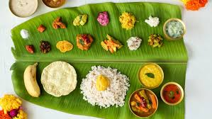

Indian Cuisine
Published on June 3, 1974
The potatoes, tomatoes, peas, and carrots common across Indian cuisine today? All of that came from traders and merchants during the latter half of the 18th century.

Diverse Cuisine
Published on March 8, 1977
Indian traditional food is not just diverse in nature, but the nutrition value of the food items is enriching. It consist of combinations of grains, vegetables,nuts which have mines of nutrition.
I love foods!

Tarla Dalal
I love trying new foods!